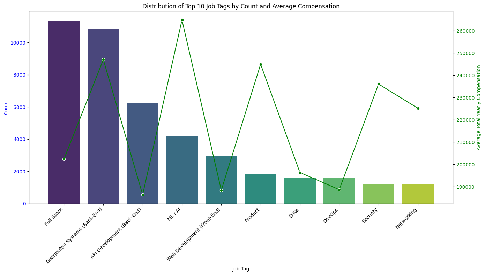
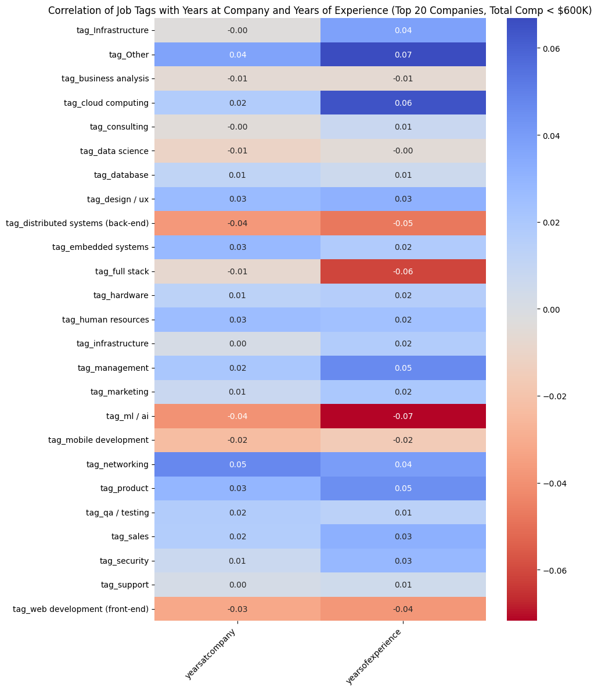
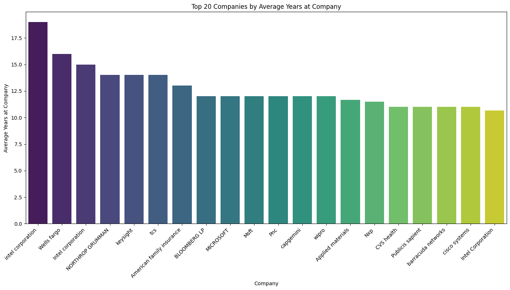
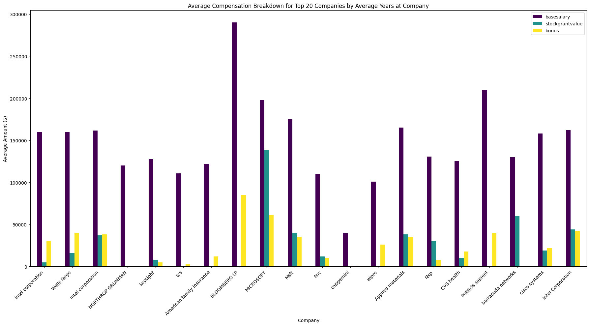
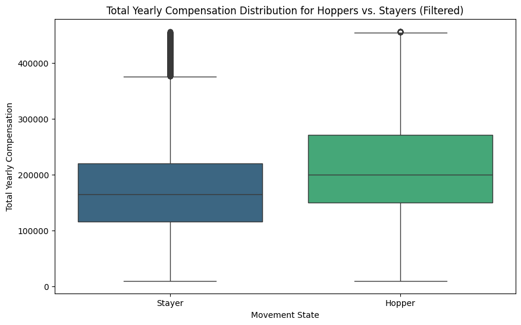
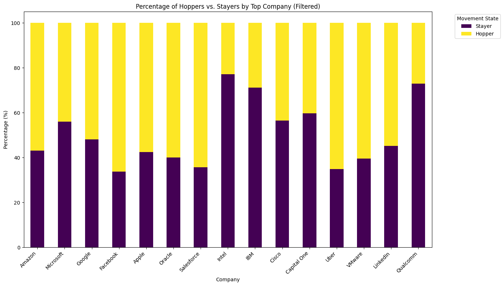
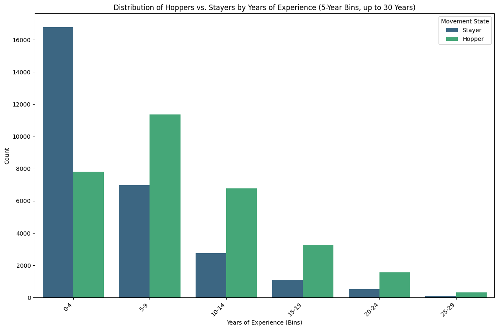
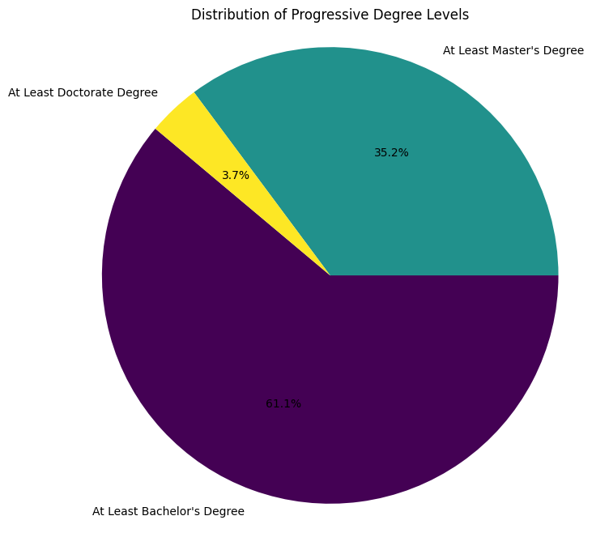

A ground-up analysis of 62,642 self-reported tech compensation records from levels.fyi — cleaned, feature-engineered, and modeled to answer the questions job seekers actually ask: which skills pay the most, which companies pay and retain best, and whether job-hopping is worth it.
Job seekers and career switchers routinely make two high-stakes decisions — which skill to invest in and which company to target — using anecdotes, recruiter pitches, and outdated salary chatter. Levels.fyi collects self-reported compensation at scale, but the raw survey data is messy: inconsistent company names, 1,809 unique "level" labels, free-text job tags, and no built-in answer to "so what should I actually do?" This project turns that raw signal into a decision-support analysis.
Job tags like "ML / AI" and "Distributed Systems" command 15–20% more than "Web Development" or "DevOps" — but by how much, and is the gap worth a re-skilling bet?
Total comp varies wildly by company mix of base, stock, and bonus — and the companies that pay the most aren't always the ones that keep people longest.
52% of the dataset are "hoppers" (below-median tenure). Does moving jobs more often actually pay more, or is that a myth?
Clean a noisy 62K-row public survey, engineer decision-relevant features, and build models that quantify these trade-offs instead of guessing at them.
The source file ("Levels_Fyi_Salary_Data.csv") is a self-reported survey spanning 219 companies, 786 locations, and 15 standardized job titles. Getting it analysis-ready was most of the work.
"Full Stack" and "Distributed Systems" are the two most common job tags in the dataset — but they're not the highest-paying ones. The relationship between how common a skill is and what it pays runs almost inversely for several categories.

Fastest-growing skills per additional year of experience (linear model, $/year): Web Development ($6,745), ML / AI ($6,645), Product ($6,601), and Full Stack ($6,212) compound the fastest — meaning the skill that pays best today (ML/AI) is also one of the fastest-compounding, a rare double win.

The companies that pay the richest total packages and the companies people stay at longest are not the same list. Big tech leans on high stock and bonus mix; legacy enterprise and defense/finance firms lean on base salary and longer average tenure — even though their smaller sample sizes here mean these tenure figures should be read as directional, not definitive.


Splitting the dataset at the median tenure (2 years) into "Hoppers" (below median) and "Stayers" (at/above median) shows a consistent compensation gap in favor of hopping — but the story shifts by career stage.




Bachelor's: $191,293 (baseline)
Master's: $200,488 (+$9,195)
Doctorate: $258,538 (+$67,245 vs. Bachelor's)
Using years of experience, education, one-hot encoded location, and one-hot encoded job tags as features (trained on 25,880 records, tested on 7,764), four separate models were built to test how predictable each career outcome really is.
| Target | Model Type | Result | Interpretation |
|---|---|---|---|
| Job Title / Role | Classification | 71.2% accuracy | Skills & tags strongly signal role — the most predictable outcome |
| Total Yearly Compensation | Regression | R² = 0.47 (MAE $48,761) | Moderate predictive power — features explain under half the variance |
| Company | Classification | 39.1% accuracy | Hard to predict — company choice driven by factors outside the data |
| Compensation Mix (base/stock/bonus %) | Multi-output Regression | R² ≈ 0 (some negative) | Not predictable from these features — company-specific pay structure dominates |
Job tags, experience, and location carry real signal for role and, to a lesser degree, total pay — but the exact company you'll land at and how your package is split between cash and equity is shaped by factors this survey simply doesn't capture (negotiation, timing, individual performance).
These tags combine the highest average compensation with above-median year-over-year growth — the rare case where popularity, pay, and pay growth all point the same direction.
Match the decision to the goal: Microsoft-style mixed packages for near-term total comp, legacy enterprise/defense names for stability and tenure-driven growth.
Staying put in the first 0–4 years correlates with a $42K+ compensation gap versus the dataset median — the data supports evaluating outside offers early, not just after year five.
With R² = 0.47 on salary and only 39% accuracy on company, treat model outputs as a starting negotiation anchor — real offers depend on unmeasured factors like leverage and timing.
"The right skill and the right company aren't guesses — they're a data question. This analysis turns a messy public salary survey into a repeatable framework for answering it."